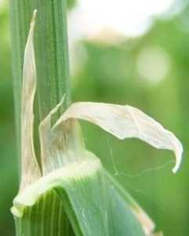
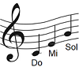
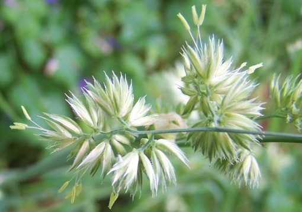
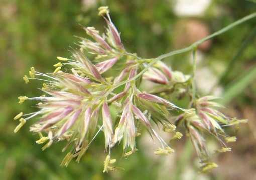

DACTYLIS glomerata L. subsp. glomerata
Dactyle aggloméré, pied-de-pouleDans l'Yonne
- Très commun, comme d'ailleurs partout sur le Continent eurasien (dommage que l'Eurasie soit devenue une notion géopolitique plutôt que géographique pour les humains. Heureusement que les plantes "pensent" différemment.)
- Mode de vie : vivace.
- Période de floraison approximative :
Fin Avril-Mai-Juin-Juillet-Août.
- Habitat : Friches, prairies, bord de chemins.
- Taille : 20 à 100 cm.
Origine supposée des noms
- générique : du grec δάχτυλο (dactylo), doigt, en raison de la forme de sa panicule.
- spécifique : participe latin du verbe glomerare, mettre en pelote, en boule. Dérivé de glomus, pelote, boule.
- En langue vernaculaire, plusieurs noms ont été répertoriés par l'EPPO, comme chiendent à bossettes, herbe des vergers, patte de lièvre, pied-de-poule.
 Jean-Philippe Rameau (1683-1764) : La Poule. Jean-Philippe Rameau (1683-1764) : La Poule.
Synonymies récentes
Détails caractéristiques
- C'est une plante héliophile.
- Sa plasticité est grande.
- Son système racinaire se développe rapidement et profondément et son rhizome est court et épais.
- Ses chaumes sont fortement comprimés dans leur gaine à la base.
- Ses feuilles ont des gaines entières. Leurs limbes sont généralement glauques (de couleur vert-bleuté), sans oreillettes.
- Leurs ligules sont larges et parfois légèrement velues à l'arrière et dentelées à l'apex. Leur forme est irrégulière et elles n'ont pas d'oreillettes.

- Ses panicules sont rameuses.
Dactylis glomerata est une espèce complexe car, encore sauvage le plus souvent, sa diversité génétique n'a rien d'uniforme !
Et sa diversité métabolique non plus. Ses espèces sauvages se distingent des variétés cultivées par une teneur élevée en proline et en thréonine, indicateurs d'une forte résistance au déficit hydrique et aux températures élevées, comme l'ont remarqué des chercheurs Russes se souvenant de Nikolaï Vavilov (1887-1943).
Elle comprend des taxons infra-spécifiques variables au niveau de leur ploïdie, certains étant diploïdes à 2n chromosomes, d'autres tétraploïdes à 4n et même hexaploïdes à 6n.
Les différences visibles ci-dessous, au niveau de ses paléoles (bractées internes) et de ses lemmes (bractées externes), en seraient-elles une illustration ?

- Paléoles et lemmes blancs, anthères basifixes

- Paléoles et lemmes teintés de roses,
anthères basifixes et médifixes

Lucy-sur-Cure, 19 mai 2011
- Rarement autogame, sa pollinisation est surtout anépophile bien que ses grains de pollen soient de taille moyenne.
- Ses fruits sont des caryopses glabres et fusiformes.
Nombre d'espèces icaunaises
dans le genre
|